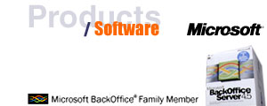
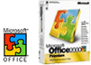

|
 |
| BackOffice Server An integrated server suite built on Windows NT Server, this software combines networking, web and host-connectivity services to simplify the development, deployment and management of enterprise-wide solutions. |
||
 |
Exchange Server The best choice for long-term messaging and collaboration needs, Exchange Server's open architecture allows for cost-effective administration. Features include unlimited storage capacity, and enhanced backup and security. |
|
| Proxy Server Proxy Server offers the first flexible firewall and web cache server for Microsoft Windows NT Server to cost-effectively assist businesses as they expand their networks to the Internet. |
||
| Site Server For business who need to quickly find, deliver and share information internally, Site Server is an ideal solution. Site Server supports intranet applications to enhance the efficient management of information. |
||
| Site Server Commerce
Edition Site Server Commerce Edition is the comprehensive Internet commerce server that enables businesses to reach more customers, conduct online transactions and access e-commerce applications. |
||
| BackOffice Small
Business Server This Microsoft application is a complete networking business solutions designed with the needs of smaller companies - 50 or less employees - in mind. Affordably priced, integrated, and extremely flexible. |
||
| SNA Server A comprehensive gateway and application integration platform, SNA Server assists companies in leveraging Internet, intranet and client/server technologies while protecting AS/400 and legacy investments. |
||
| SQL Server SQL Server makes it easy to design, build, manage and use data warehousing solutions, provides 100% application compatibility, and increases productivity by integrating seamless with Microsoft Office 2000. |
||
| SMS Server By collecting data in a CIM format, this solution gives administrators wider access multiple data sources, including Win32, SNMP and DMI. Added filtering options allow administrator to choose which data is most important. |
|
 |
Back
To Top
|